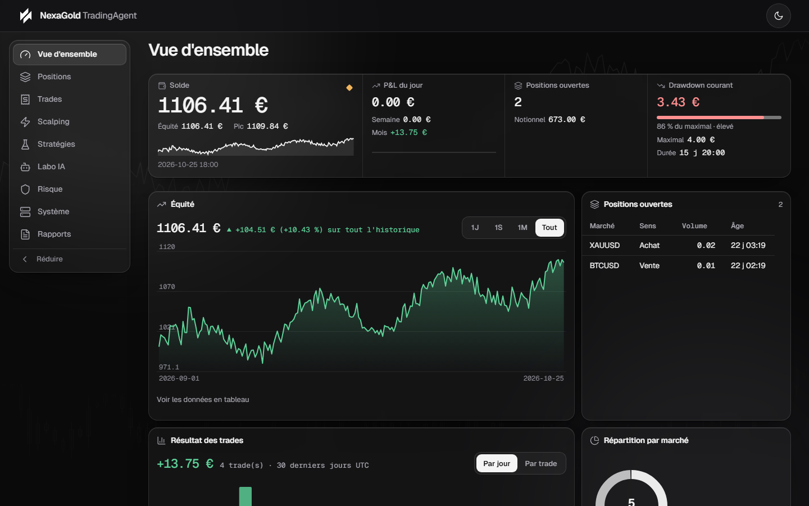

NexaGold TradingAgent
Trading algorithmique XAUUSD et BTCUSD, avec garde-fous.
L'IA recherche et améliore les stratégies ; elle ne décide pas de chaque trade. Backtest réaliste, validation anti-surapprentissage, exécution MetaTrader 5 protégée par deux Expert Advisors et dashboard de monitoring en lecture seule.
Projet en cours, démo uniquement. Compte de démonstration MetaTrader 5, mode réel non activé, aucune rentabilité démontrée.

Ce que fait le projet
- Recherche assistée par IAGénération et amélioration quotidienne de stratégies, jamais d'ordre direct.
- Backtest et validationCoûts réalistes, tests anti-surapprentissage, échelle de promotion par stratégie.
- Exécution MT5 protégéeDeux EA MQL5, arrêt local si le backend se tait, arrêt d'urgence côté serveur.
- Risque en premierLimites de perte jour/semaine, drawdown, positions, chaque refus persisté avec son motif.
- Monitoring webDashboard dense et interactif, en lecture seule, thème sombre et clair.
- Open sourceLicence MIT, tests, CI, aucun secret dans le dépôt.